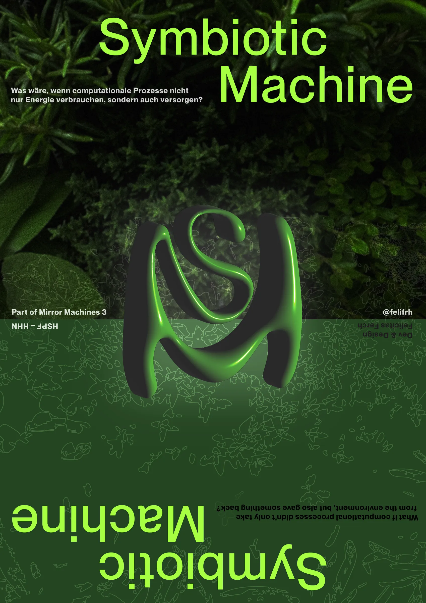
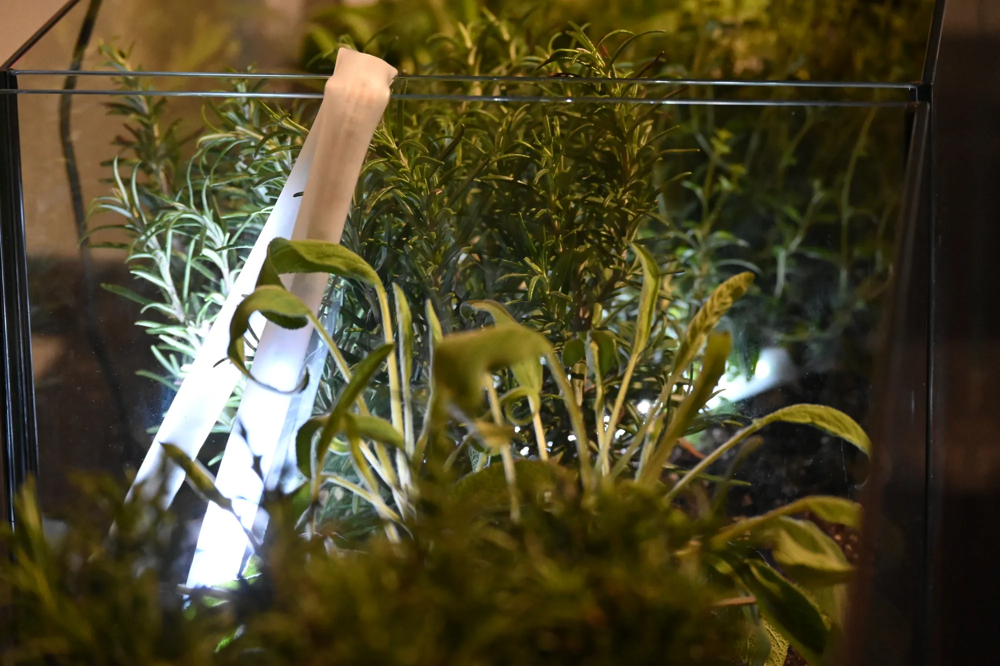
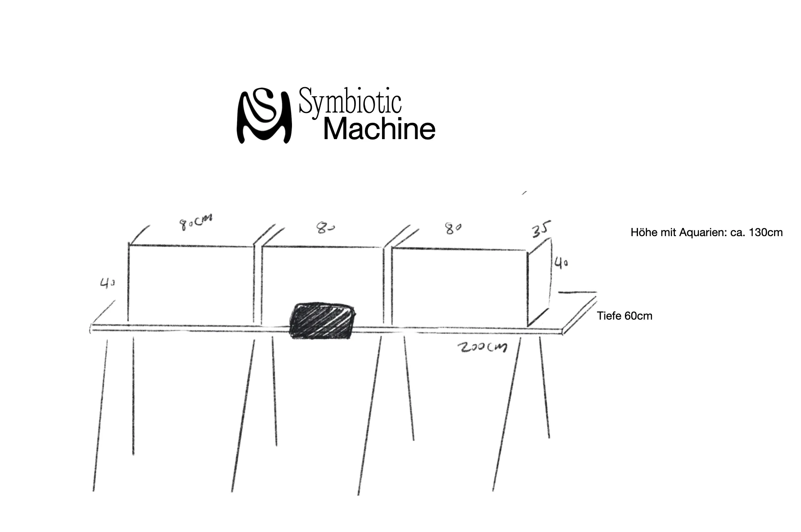

Symbiotic Machine
An interactive installation that turns the hidden energy use of AI into a relationship you can see and feel.
- Year
- 2025 – 2026
- Context
- Mirror Machines 3, cooperation of Pforzheim University and Heilbronn University
- Team
- solo project
- Role
- concept, development and design
- Tools
- Raspberry Pi, Python/Flask, OpenAI API, Neopixel LEDs, touch display

01 / Question
What if computational processes did not only take from the environment, but also gave something back? Symbiotic Machine translates the usually invisible energy consumption of artificial intelligence into an experience. Every prompt sets a process in motion that produces, above all, heat. The installation reads AI not as an immaterial tool but as an energy-dependent system whose activity always has physical consequences.

02 / Installation
Three glass greenhouses filled with herbs stand on a table. A small touch display offers prompts about AI and the environment. Once a prompt is chosen, the answer flows in piece by piece while an LED strip sends orange impulses from the computer down to the plants. A bar on the display shows the rising temperature. Heat becomes the mediator between digital information and living matter, a by-product that can nourish and endanger at the same time.

03 / Decision
We decided against real heating mats. They would only have imitated the long-term effect, and visitors could not have felt the warmth anyway. Heat is therefore made readable as light, and the temperature runs as a simulation in the interface. The result is a moral feedback loop: your curiosity keeps something alive, but too much of it harms it.


04 / Exhibitions & links
Exhibitions & presentations
- Mirror Machines 3 – Relations, Kunstverein Heilbronn in the Kunsthalle Vogelmann, 30 January – 1 February 2026
- Werkschau Pforzheim, February 2026
- "Relations: Mirror Machines 3", accompanying exhibition at MADLAB for the A.K.T; exhibition "In der Heimat zu Gast", 25 April – 5 July 2026